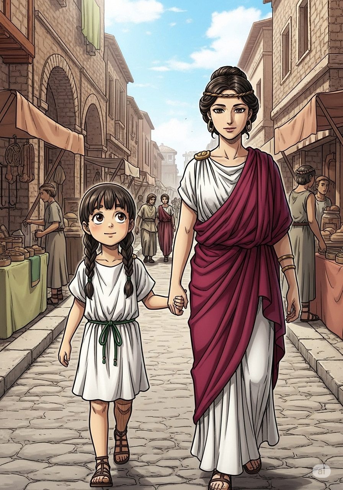

-
The Day the Mountain Roared
by Panagiotis Domvros
-
Long, long ago, in ancient Italy, there was a beautiful city called Pompeii. It sat at the foot of a mighty mountain, Mount Vesuvius. The people of Pompeii loved their city very much.
-

Pompeii was a busy place! Streets were full of people. There were many shops selling goods, and lively bars where friends met. People enjoyed plays at the theatre and watched exciting games at the amphitheatre.
-
Every day, citizens visited the public baths to relax and clean themselves. Taverns offered delicious food and drinks. Life in Pompeii was full of joy and activity.
-
One warm August day in AD 79, the sun shone brightly. Aura, a young girl, was playing with her dog. Her mother, Livia, was preparing lunch. Everything seemed peaceful.
-
Suddenly, the ground began to shake! A loud roar came from Mount Vesuvius. Dark clouds of smoke and ash shot into the sky. People looked up, confused and worried.
-
Then, rocks and hot ash began to fall like rain. Buildings started to shake and collapse. Fires broke out everywhere. People screamed, and children cried in fear.
-
Some people prayed, hoping for a miracle. But the hot lava flowed down the mountain, covering everything. Pompeii was buried completely under a thick layer of ash and rock.
-
For almost 1,700 years, Pompeii lay hidden and forgotten. Then, in 1748, archaeologists started digging. They could not believe what they found!
-
The city was perfectly preserved! Shops, temples, and a theatre were still there. Even beautiful wall paintings looked fresh. It was like a time capsule!
-
The ash had hardened around people's bodies, keeping their shapes. Archaeologists poured plaster into these spaces, making casts of the people. They also found a half-eaten loaf of bread, eggs, a kettle on the fire, and a "Cave Canem" (Beware of Dog) sign!
Multiple Choice
1. What is the name of the mountain that overlooks Pompeii?
2. In what year did the volcanic eruption happen?
3. What fell from the sky during the eruption?
4. What does the Latin phrase "Cave Canem" mean?
5. What did archaeologists pour into the spaces left by bodies to create casts?
True or False
1. The people of Pompeii knew the volcano was about to erupt.
2. The city was discovered just a few years after it was buried.
3. Life in Pompeii was quiet and slow-paced.
4. The ash from the volcano helped to preserve the city.
5. Archaeologists found a fully cooked meal ready to be served.
Further Reading
The Roman city of Pompeii, nestled in the shadow of Mount Vesuvius, was a thriving hub of commerce and daily life. Before its catastrophic eruption in AD 79, the city was a popular holiday destination for wealthy Romans, famed for its luxurious villas and bustling markets. However, the ground had given warnings before. A major earthquake in AD 62 caused widespread damage, and many rebuilding projects were still underway when the final disaster struck. Pliny the Younger, a Roman administrator who witnessed the eruption from across the Bay of Naples, wrote letters detailing the event, providing one of history’s most valuable firsthand accounts of a volcanic eruption.
When archaeologists began the systematic excavation of Pompeii in the 18th century, they unearthed an entire city frozen in time. The layers of hardened ash and pumice had acted as a preservative, protecting buildings, frescoes, and everyday objects from the elements. The famous plaster casts of the victims, created by pioneering archaeologist Giuseppe Fiorelli in the 1860s, offer a poignant and human glimpse into the final moments of the city’s inhabitants. Today, Pompeii is a UNESCO World Heritage site and continues to be a subject of intense study, revealing more about Roman life with every new discovery.